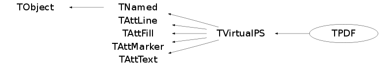

class TPDF: public TVirtualPS
TPDF: Graphics interface to PDF
Compare to PostScript output, the PDF files are usually smaller because some parts of them can be compressed.
PDF also allows to define table of contents. This facility can be used in ROOT. The following example shows how to proceed:
{
TCanvas* canvas = new TCanvas("canvas");
TH1F* histo = new TH1F("histo","test 1",10,0.,10.);
histo->SetFillColor(2);
histo->Fill(2.);
histo->Draw();
canvas->Print("plots.pdf(","Title:One bin filled");
histo->Fill(4.);
histo->Draw();
canvas->Print("plots.pdf","Title:Two bins filled");
histo->Fill(6.);
histo->Draw();
canvas->Print("plots.pdf","Title:Three bins filled");
histo->Fill(8.);
histo->Draw();
canvas->Print("plots.pdf","Title:Four bins filled");
histo->Fill(8.);
histo->Draw();
canvas->Print("plots.pdf)","Title:The fourth bin content is 2");
}
Each character string following the keyword "Title:" makes a new entry in
the table of contents.
Function Members (Methods)
public:
| TPDF() | |
| TPDF(const char* filename, Int_t type = -111) | |
| virtual | ~TPDF() |
| void | TObject::AbstractMethod(const char* method) const |
| virtual void | TObject::AppendPad(Option_t* option = "") |
| virtual void | TObject::Browse(TBrowser* b) |
| virtual void | CellArrayBegin(Int_t W, Int_t H, Double_t x1, Double_t x2, Double_t y1, Double_t y2) |
| virtual void | CellArrayEnd() |
| virtual void | CellArrayFill(Int_t r, Int_t g, Int_t b) |
| static TClass* | Class() |
| virtual const char* | TObject::ClassName() const |
| virtual void | TNamed::Clear(Option_t* option = "") |
| virtual TObject* | TNamed::Clone(const char* newname = "") const |
| virtual void | Close(Option_t* opt = "") |
| Double_t | CMtoPDF(Double_t u) |
| virtual Int_t | TNamed::Compare(const TObject* obj) const |
| virtual void | TNamed::Copy(TObject& named) const |
| virtual void | TObject::Delete(Option_t* option = "")MENU |
| Int_t | TAttLine::DistancetoLine(Int_t px, Int_t py, Double_t xp1, Double_t yp1, Double_t xp2, Double_t yp2) |
| virtual Int_t | TObject::DistancetoPrimitive(Int_t px, Int_t py) |
| virtual void | TObject::Draw(Option_t* option = "") |
| virtual void | DrawBox(Double_t x1, Double_t y1, Double_t x2, Double_t y2) |
| virtual void | TObject::DrawClass() constMENU |
| virtual TObject* | TObject::DrawClone(Option_t* option = "") constMENU |
| virtual void | DrawFrame(Double_t xl, Double_t yl, Double_t xt, Double_t yt, Int_t mode, Int_t border, Int_t dark, Int_t light) |
| void | DrawHatch(Float_t dy, Float_t angle, Int_t n, Float_t* x, Float_t* y) |
| void | DrawHatch(Float_t dy, Float_t angle, Int_t n, Double_t* x, Double_t* y) |
| void | DrawPolyLine(Int_t n, TPoints* xy) |
| void | DrawPolyLineNDC(Int_t n, TPoints* uv) |
| virtual void | DrawPolyMarker(Int_t n, Float_t* x, Float_t* y) |
| virtual void | DrawPolyMarker(Int_t n, Double_t* x, Double_t* y) |
| virtual void | DrawPS(Int_t n, Float_t* xw, Float_t* yw) |
| virtual void | DrawPS(Int_t n, Double_t* xw, Double_t* yw) |
| virtual void | TObject::Dump() constMENU |
| virtual void | TObject::Error(const char* method, const char* msgfmt) const |
| virtual void | TObject::Execute(const char* method, const char* params, Int_t* error = 0) |
| virtual void | TObject::Execute(TMethod* method, TObjArray* params, Int_t* error = 0) |
| virtual void | TObject::ExecuteEvent(Int_t event, Int_t px, Int_t py) |
| virtual void | TObject::Fatal(const char* method, const char* msgfmt) const |
| virtual void | TNamed::FillBuffer(char*& buffer) |
| virtual TObject* | TObject::FindObject(const char* name) const |
| virtual TObject* | TObject::FindObject(const TObject* obj) const |
| void | FontEncode() |
| virtual Option_t* | TObject::GetDrawOption() const |
| static Long_t | TObject::GetDtorOnly() |
| virtual Color_t | TAttFill::GetFillColor() const |
| virtual Style_t | TAttFill::GetFillStyle() const |
| virtual const char* | TObject::GetIconName() const |
| virtual Color_t | TAttLine::GetLineColor() const |
| virtual Style_t | TAttLine::GetLineStyle() const |
| virtual Width_t | TAttLine::GetLineWidth() const |
| virtual Color_t | TAttMarker::GetMarkerColor() const |
| virtual Size_t | TAttMarker::GetMarkerSize() const |
| virtual Style_t | TAttMarker::GetMarkerStyle() const |
| virtual const char* | TNamed::GetName() const |
| virtual char* | TObject::GetObjectInfo(Int_t px, Int_t py) const |
| static Bool_t | TObject::GetObjectStat() |
| virtual Option_t* | TObject::GetOption() const |
| virtual void* | TVirtualPS::GetStream() const |
| virtual Short_t | TAttText::GetTextAlign() const |
| virtual Float_t | TAttText::GetTextAngle() const |
| virtual Color_t | TAttText::GetTextColor() const |
| virtual Font_t | TAttText::GetTextFont() const |
| virtual Float_t | TAttText::GetTextSize() const |
| virtual const char* | TNamed::GetTitle() const |
| virtual Int_t | TVirtualPS::GetType() const |
| virtual UInt_t | TObject::GetUniqueID() const |
| virtual Bool_t | TObject::HandleTimer(TTimer* timer) |
| virtual ULong_t | TNamed::Hash() const |
| virtual void | TObject::Info(const char* method, const char* msgfmt) const |
| virtual Bool_t | TObject::InheritsFrom(const char* classname) const |
| virtual Bool_t | TObject::InheritsFrom(const TClass* cl) const |
| virtual void | TObject::Inspect() constMENU |
| void | TObject::InvertBit(UInt_t f) |
| virtual TClass* | IsA() const |
| virtual Bool_t | TObject::IsEqual(const TObject* obj) const |
| virtual Bool_t | TObject::IsFolder() const |
| Bool_t | TObject::IsOnHeap() const |
| virtual Bool_t | TNamed::IsSortable() const |
| virtual Bool_t | TAttFill::IsTransparent() const |
| Bool_t | TObject::IsZombie() const |
| void | LineTo(Double_t x, Double_t y) |
| virtual void | TNamed::ls(Option_t* option = "") const |
| void | TObject::MayNotUse(const char* method) const |
| virtual void | TAttLine::Modify() |
| void | MoveTo(Double_t x, Double_t y) |
| void | NewObject(Int_t n) |
| virtual void | NewPage() |
| virtual Bool_t | TObject::Notify() |
| void | TObject::Obsolete(const char* method, const char* asOfVers, const char* removedFromVers) const |
| void | Off() |
| void | On() |
| virtual void | Open(const char* filename, Int_t type = -111) |
| static void | TObject::operator delete(void* ptr) |
| static void | TObject::operator delete(void* ptr, void* vp) |
| static void | TObject::operator delete[](void* ptr) |
| static void | TObject::operator delete[](void* ptr, void* vp) |
| void* | TObject::operator new(size_t sz) |
| void* | TObject::operator new(size_t sz, void* vp) |
| void* | TObject::operator new[](size_t sz) |
| void* | TObject::operator new[](size_t sz, void* vp) |
| TNamed& | TNamed::operator=(const TNamed& rhs) |
| virtual void | TObject::Paint(Option_t* option = "") |
| void | PatternEncode() |
| virtual void | TObject::Pop() |
| virtual void | TNamed::Print(Option_t* option = "") const |
| virtual void | PrintFast(Int_t nch, const char* string = "") |
| virtual void | PrintStr(const char* string = "") |
| void | Range(Float_t xrange, Float_t yrange) |
| virtual Int_t | TObject::Read(const char* name) |
| virtual void | TObject::RecursiveRemove(TObject* obj) |
| virtual void | TAttFill::ResetAttFill(Option_t* option = "") |
| virtual void | TAttLine::ResetAttLine(Option_t* option = "") |
| virtual void | TAttMarker::ResetAttMarker(Option_t* toption = "") |
| virtual void | TAttText::ResetAttText(Option_t* toption = "") |
| void | TObject::ResetBit(UInt_t f) |
| virtual void | TObject::SaveAs(const char* filename = "", Option_t* option = "") constMENU |
| virtual void | TAttFill::SaveFillAttributes(ostream& out, const char* name, Int_t coldef = 1, Int_t stydef = 1001) |
| virtual void | TAttLine::SaveLineAttributes(ostream& out, const char* name, Int_t coldef = 1, Int_t stydef = 1, Int_t widdef = 1) |
| virtual void | TAttMarker::SaveMarkerAttributes(ostream& out, const char* name, Int_t coldef = 1, Int_t stydef = 1, Int_t sizdef = 1) |
| virtual void | TObject::SavePrimitive(ostream& out, Option_t* option = "") |
| virtual void | TAttText::SaveTextAttributes(ostream& out, const char* name, Int_t alidef = 12, Float_t angdef = 0, Int_t coldef = 1, Int_t fondef = 61, Float_t sizdef = 1) |
| void | TObject::SetBit(UInt_t f) |
| void | TObject::SetBit(UInt_t f, Bool_t set) |
| void | SetColor(Int_t color = 1) |
| virtual void | SetColor(Float_t r, Float_t g, Float_t b) |
| virtual void | TObject::SetDrawOption(Option_t* option = "")MENU |
| static void | TObject::SetDtorOnly(void* obj) |
| virtual void | TAttFill::SetFillAttributes()MENU |
| virtual void | SetFillColor(Color_t cindex = 1) |
| void | SetFillPatterns(Int_t ipat, Int_t color) |
| virtual void | TAttFill::SetFillStyle(Style_t fstyle) |
| virtual void | TAttLine::SetLineAttributes()MENU |
| virtual void | SetLineColor(Color_t cindex = 1) |
| void | SetLineScale(Float_t scale = 1) |
| virtual void | SetLineStyle(Style_t linestyle = 1) |
| virtual void | SetLineWidth(Width_t linewidth = 1) |
| virtual void | TAttMarker::SetMarkerAttributes()MENU |
| virtual void | SetMarkerColor(Color_t cindex = 1) |
| virtual void | TAttMarker::SetMarkerSize(Size_t msize = 1) |
| virtual void | TAttMarker::SetMarkerStyle(Style_t mstyle = 1) |
| virtual void | TNamed::SetName(const char* name)MENU |
| virtual void | TNamed::SetNameTitle(const char* name, const char* title) |
| static void | TObject::SetObjectStat(Bool_t stat) |
| virtual void | TVirtualPS::SetStream(ofstream* os) |
| virtual void | TAttText::SetTextAlign(Short_t align = 11) |
| virtual void | TAttText::SetTextAngle(Float_t tangle = 0)MENU |
| virtual void | TAttText::SetTextAttributes()MENU |
| virtual void | SetTextColor(Color_t cindex = 1) |
| virtual void | TAttText::SetTextFont(Font_t tfont = 62) |
| virtual void | TAttText::SetTextSize(Float_t tsize = 1) |
| virtual void | TAttText::SetTextSizePixels(Int_t npixels) |
| virtual void | TNamed::SetTitle(const char* title = "")MENU |
| virtual void | TVirtualPS::SetType(Int_t = -111) |
| virtual void | TObject::SetUniqueID(UInt_t uid) |
| virtual void | ShowMembers(TMemberInspector& insp) |
| virtual Int_t | TNamed::Sizeof() const |
| virtual void | Streamer(TBuffer& b) |
| void | StreamerNVirtual(TBuffer& b) |
| virtual void | TObject::SysError(const char* method, const char* msgfmt) const |
| Bool_t | TObject::TestBit(UInt_t f) const |
| Int_t | TObject::TestBits(UInt_t f) const |
| virtual void | Text(Double_t x, Double_t y, const char* string) |
| void | TextNDC(Double_t u, Double_t v, const char* string) |
| virtual void | TObject::UseCurrentStyle() |
| Double_t | UtoPDF(Double_t u) |
| Double_t | VtoPDF(Double_t v) |
| virtual void | TObject::Warning(const char* method, const char* msgfmt) const |
| virtual Int_t | TObject::Write(const char* name = 0, Int_t option = 0, Int_t bufsize = 0) |
| virtual Int_t | TObject::Write(const char* name = 0, Int_t option = 0, Int_t bufsize = 0) const |
| void | WriteCompressedBuffer() |
| virtual void | TVirtualPS::WriteInteger(Int_t i, Bool_t space = kTRUE) |
| virtual void | WriteReal(Float_t r) |
| Double_t | XtoPDF(Double_t x) |
| Double_t | YtoPDF(Double_t y) |
protected:
| virtual void | TObject::DoError(int level, const char* location, const char* fmt, va_list va) const |
| void | TObject::MakeZombie() |
Data Members
public:
| enum TObject::EStatusBits { | kCanDelete | |
| kMustCleanup | ||
| kObjInCanvas | ||
| kIsReferenced | ||
| kHasUUID | ||
| kCannotPick | ||
| kNoContextMenu | ||
| kInvalidObject | ||
| }; | ||
| enum TObject::[unnamed] { | kIsOnHeap | |
| kNotDeleted | ||
| kZombie | ||
| kBitMask | ||
| kSingleKey | ||
| kOverwrite | ||
| kWriteDelete | ||
| }; |
protected:
| Float_t | fBlue | Per cent of blue |
| char* | TVirtualPS::fBuffer | File buffer |
| Bool_t | fCompress | True when fBuffer must be compressed |
| Color_t | TAttFill::fFillColor | fill area color |
| Style_t | TAttFill::fFillStyle | fill area style |
| Float_t | fGreen | Per cent of green |
| const char* | TVirtualPS::fImplicitCREsc | Escape symbol before enforced new line |
| Int_t | TVirtualPS::fLenBuffer | Buffer length |
| Color_t | TAttLine::fLineColor | line color |
| Float_t | fLineScale | Line width scale factor |
| Style_t | TAttLine::fLineStyle | line style |
| Width_t | TAttLine::fLineWidth | line width |
| Color_t | TAttMarker::fMarkerColor | Marker color index |
| Size_t | TAttMarker::fMarkerSize | Marker size |
| Style_t | TAttMarker::fMarkerStyle | Marker style |
| Int_t | TVirtualPS::fNByte | Number of bytes written in the file (PDF) |
| TString | TNamed::fName | object identifier |
| Int_t | fNbObj | Number of objects |
| Int_t | fNbPage | Number of pages |
| Int_t* | fObjPos | Objets position |
| Int_t | fObjPosSize | Real size of fObjPos |
| Int_t | fPageFormat | Page format (A4, Letter etc ...) |
| Bool_t | fPageNotEmpty | True if the current page is not empty |
| Int_t | fPageOrientation | Page orientation (Portrait, Landscape) |
| Bool_t | TVirtualPS::fPrinted | True when a page must be printed |
| Bool_t | fRange | True when a range has been defined |
| Float_t | fRed | Per cent of red |
| Int_t | TVirtualPS::fSizBuffer | Buffer size |
| Int_t | fStartStream | |
| ofstream* | TVirtualPS::fStream | File stream identifier |
| Short_t | TAttText::fTextAlign | Text alignment |
| Float_t | TAttText::fTextAngle | Text angle |
| Color_t | TAttText::fTextColor | Text color index |
| Font_t | TAttText::fTextFont | Text font number |
| Float_t | TAttText::fTextSize | Text size |
| TString | TNamed::fTitle | object title |
| Int_t | fType | Workstation type used to know if the PDF is open |
| Float_t | fXsize | Page size along X |
| Float_t | fYsize | Page size along Y |
Class Charts
{kind=link}
{kind=link}
{kind=link}
{kind=link}

Function documentation
TPDF(const char* filename, Int_t type = -111)
Initialize the PDF interface fname : PDF file name wtype : PDF workstation type. Not used in the PDF driver. But as TPDF inherits from TVirtualPS it should be kept. Anyway it is not necessary to specify this parameter at creation time because it has a default value (which is ignore in the PDF case).
void CellArrayBegin(Int_t W, Int_t H, Double_t x1, Double_t x2, Double_t y1, Double_t y2)
Begin the Cell Array painting
void DrawFrame(Double_t xl, Double_t yl, Double_t xt, Double_t yt, Int_t mode, Int_t border, Int_t dark, Int_t light)
Draw a Frame around a box mode = -1 box looks as it is behind the screen mode = 1 box looks as it is in front of the screen border is the border size in already precomputed PDF units dark is the color for the dark part of the frame light is the color for the light part of the frame
void DrawHatch(Float_t dy, Float_t angle, Int_t n, Float_t* x, Float_t* y)
Draw Fill area with hatch styles
void DrawHatch(Float_t dy, Float_t angle, Int_t n, Double_t* x, Double_t* y)
Draw Fill area with hatch styles
void DrawPolyLine(Int_t n, TPoints* xy)
void DrawPolyLineNDC(Int_t n, TPoints* uv)
void SetColor(Float_t r, Float_t g, Float_t b)
Set color with its R G B components r: % of red in [0,1] g: % of green in [0,1] b: % of blue in [0,1]
void SetLineStyle(Style_t linestyle = 1)
Change the line style
linestyle = 2 dashed
= 3 dotted
= 4 dash-dotted
= else solid (1 in is used most of the time)
void Text(Double_t x, Double_t y, const char* string)
Draw text xx: x position of the text yy: y position of the text chars: text to be drawn
void WriteReal(Float_t r)
Write a Real number to the file. This method overwrites TVirtualPS::WriteReal. Some PDF reader like Acrobat do not work when a PDF file contains reals with exponent. This method writes the real number "z" using the format "%f" instead of the format "%g" when writing it with "%g" generates a number with exponent.